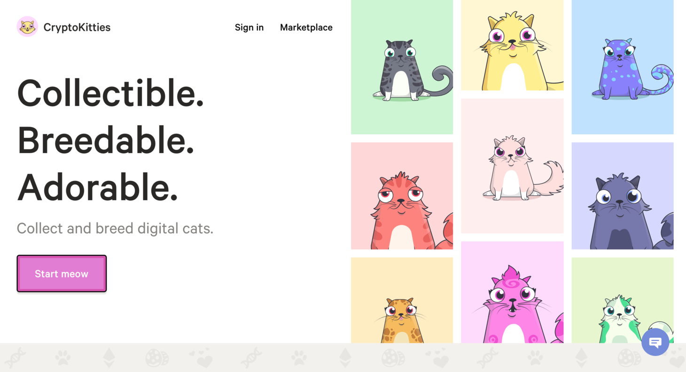
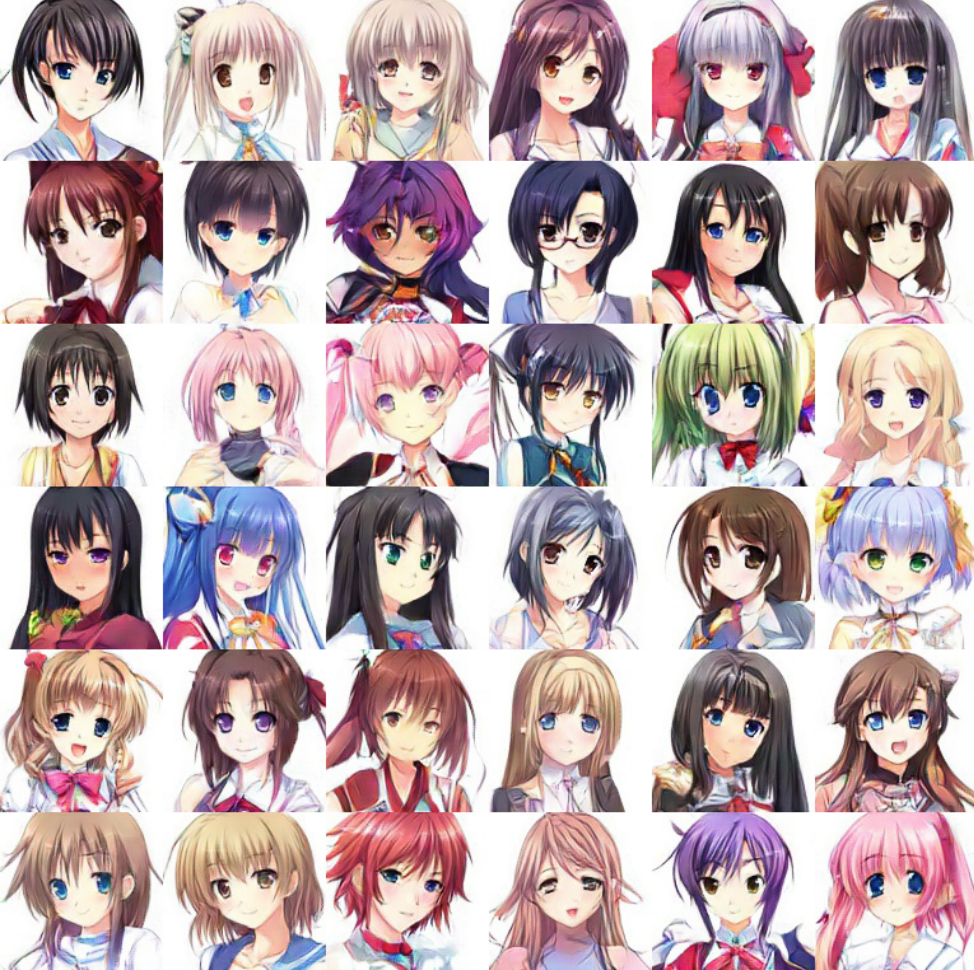

Hello World
CodeTengu Weekly 碼天狗週刊
CodeTengu Weekly 會在 GMT+8 時區的每個禮拜一 AM 10:00 出刊，每週會由三位 curator 負責當期的內容，每個 curator 有各自擅長的領域，如果你在這一期沒有看到感興趣的東西，可能下一期就有了。你也可以瀏覽一下前幾期的內容。
目前的 curator 陣容：
- @vinta - I failed the Turing Test - 科幻迷，最近在讀 Wool
- @saiday - Imnotyourson - 電量給我這種人用就是一種浪費
- @tzangms - Oceanic / 人生海海 - 靠, 買比特幣了啊!!!
- @fukuball - ImFukuball - 有新工作了，但歡迎直接挖角
- @mingderwang - Ethereum enthusiast
- @kako0507 - 熱愛嘗試新事物的前端工程師
- @chiahsien - 徵有經驗的 iOS 工程師，快來 Twitter 私訊我
- @hiroshiyui - 諸君，賺錢有數，性命要顧
- @uranusjr - Smaller Things - 我要成為錯字王
- @kkdai - 態度萬歲 - Learning Deeply....
- @yhsiang
- @johnlinvc - 挑戰自動化家中電器
- @drumrick - 歡迎加入台灣 Kaggle 交流區
- @wancw
你也可以關注我們的 Facebook、Twitter、GitHub 或 Open Source 專案，有很多 weekly 看不到的內容。有任何建議也歡迎來 Gitter 聊聊。
 @tzangms
@tzangms
Who do you promote? 5 Qualities of a Good Leader
其實這一兩年一直困擾於到底要抓誰來當 Manager，給個技術經理的職稱，或是想從外面直接應徵技術經理、技術總監之類的人進來，但是的確是有一些困擾，因為除了技術能力之外，技術主管還需要有不少特質，才能撐起一個團隊。
不過分享這邊主要是看到有幾段非常心有戚戚焉，例如下面這段:
If someone is accountable, you know that even if something goes wrong, they’ll fix it or take responsibility. They won’t hide from problems and they’ll work hard to deliver positive outcomes.
當你把責任丟給某人，應該得確定他會把事情搞定，不讓東西出任何差錯，即使出問題了，他也會想辦法把問題搞定，不論搞到多晚。但是當你發現最適合當主管的人卻不太在意這些問題的時候，那麼問題就來了，是不是不該 promote 他？
當然也不一定是這個人的錯，可能你根本沒說清楚，或是人家根本不覺得你重視這些事。所以，說清楚、講明白才是比較好的策略，但偏偏又不好拿捏 :p
再來則是這段：
Make sure the person you choose to promote is someone whose actions you want others to follow, and that you’re comfortable trusting them with leading their team.
如果你把團隊丟給一個人負責，卻擔心他會把團隊帶歪，或是底下的人會學壞？這題就是 Leadership 的問題了，也是公司文化問題。
而這篇文章提供了一些線索讓你評估，我個人覺得還算不錯。 最近發現 Lighthouse 的文章質量不錯呀，收藏了一堆還沒看。
PS. 我在上海 SV 找網站後端技術經理，有興趣的朋友可以參考我們 SV 上海的職缺
Becoming Your Future Self
早期的 CTO 必須是一個技術強者、招募者，跟好的主管，但當團隊快速成長，你該怎麼調整工作內容？ 想一下一年後、五年後，你應該要做什麼工作、不做什麼工作？
像是我的技術團隊有 10+ 人，我已經沒辦法寫 code，寫 code 反而會成為團隊的瓶頸，現在這幾個月則是在思考，我該怎麼產出更多的有領導力的管理人員。
設想明年我的團隊會成長到 30+ 人（其實不是設想，明年預算都開好了 XD ），那麼我到時候該怎麼做事？ 一定跟現在又完全不一樣，那我明年之前得該先點好哪些技能？或是先把什麼事情做好？ 先想一下，後續才能夠快速應對跟學習。
PS. 在上海有興趣的朋友可以參考我們 SV 上海的職缺
The right way to start a company
這篇提到一些很有趣的歷史，當然也有很有啟發的話，像是:
“Work on something you’re passionate about” ends up being fairly useless advice. You can be passionate about building teams or closing sales, and it might turn out that horses or makeup or gourmet food aren’t nearly as interesting when you’re running out of money and your best employee just quit.
passion comes from success
「做你覺得最有熱情的事」是個相當無用的建議，因為當你錢燒光了，最棒的夥伴先閃人了，你的熱情還會在哪？ 這段我覺得比較有啟發的是「建立團隊」也可以是算是一種有熱情、可以獲得成就感的項目。 我最近也在想我的成就感從哪裡來，「解決問題」可能是一種，但就不是賺錢啊，可惡！
有趣的歷史則像是:
- WhatsApp 的創辦人 Koum 本來撐不下去, 想收攤去找工作了, 另一位創辦人 Acton 說再撐幾個月, 然後就 ...
- AirBnB 剛開始時，不知道他們的 idea 有多威, 他們開始做另外一個找室友的產品，花了四個月開發，最後發現 roommates.com 早就有人在做了 ...
- Facebook 團隊不知道他們產品成長有多厲害, 還另外跑去做朋友之間分享檔案的產品 Wirehog ...
 @fukuball
@fukuball
AI 工具手把手工作坊 / Hands on AI Tools
Machine Learning：初級
最近受政大陳恭老師邀請幫忙上了一堂 AI 工具手把手工作坊，個人覺得內容算是蠻深入潛出的，監督式學習、非監督式學習、分群及降維大致上都有提到，也就是 scikit-learn cheat sheet 上的四大區塊都有 cover 到了，最後還示範應用了一個歌詞推薦系統的範例，當然入門之後，就需要自己慢慢再深入研究了。
我也有分享 jupyter notebook 範例程式碼，希望可以幫助想入門 Machine Learning 的人學習。
A Year in Computer Vision
Machine Learning：中級
這篇文章整理了滿滿 2017 一整年電腦視覺領域的乾貨，ML（DL）在電腦視覺領域真的大有進展，論文多到看不完啊！
How to Read Big Files with PHP (Without Killing Your Server)
PHP：中級
怎麼有效率的處理大檔案呢？當不做任何處理的時候，用 PHP 把整個檔案讀進來可能就會讓 sever 的記憶體直接爆掉，這篇文章示範了幾種方法來讀取大檔案，讓 server 的記憶體使用量大大降低，當然也就可以讓 server 可以服務更多使用者，進階的開發者應該都要學會如何處理大檔案。
Random Cool Stuff

Ethereum’s First Killer App Is Here, and It’s a Game Where You Create Digital Cats
本週上線了一個 Ethereum 殺手級應用 CryptoKitties，上線之後佔了整個 Ethereum 12% 的交易量！最高價的交易是創世貓 Genesis 要價 247 eth！很有特色的 BugCat 也要 175 eth！
說穿了就是一個區塊鏈虛擬貓咪的交易平台啊（好啦，還可以生小貓）！貓咪真的太可愛太強大了！買幾隻來壓壓驚～
CryptoKitties 帳本：https://kittysales.herokuapp.com/

MakeGirlsMoe 2D 萌妹圖像產生器
GAN 進展到現在終於可以產生出不是妖怪的 2D 萌妹圖像了，真是可喜可賀啊！接下來可能 H-Game 跟 A 漫的人物都可以用 GAN 來自動產生了？！